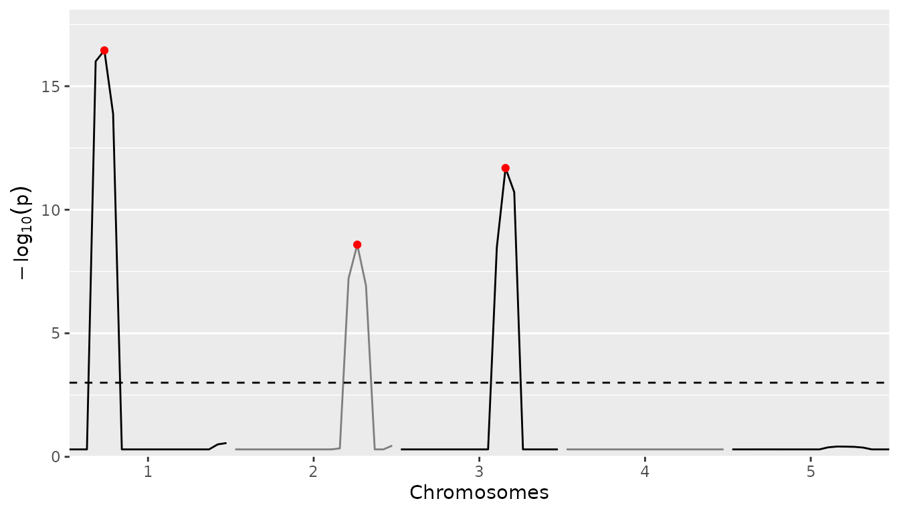
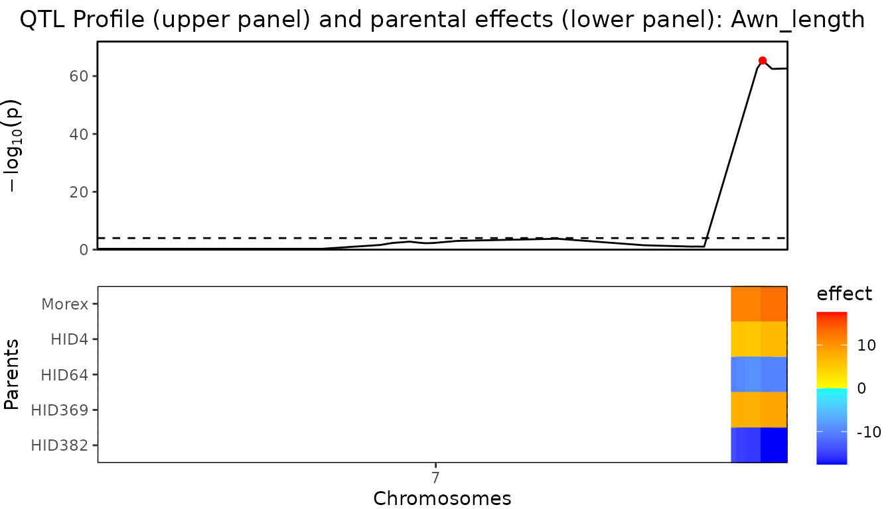

QTL Mapping in Multi-Parent Populations
Wenhao Li, Martin Boer, and Bart-Jan van Rossum
2022-03-15
QTLMapping_in_MultiParentPopulations.RmdThe statgenMPP package
The statgenMPP package is developed as an easy-to-use package for QTL mapping in multi-parent populations. The package has many ways of visualizing inputs and results.
This vignette describes in detail how to perform the IBD calculations and how to do QTL mapping using the IBD probabilities in a mixed model framework, using the LMMsolver R package. This will be illustrated using three example data sets. The first data set is a simulated NAM data set with three parents, that is relatively small and runs fast and is mainly used to show the functionality of the package. Then two data sets from literature are used to show the validity of the results from the package, first a maize data set, the dent panel of the EU-NAM maize project (Giraud et al. (2014)). The second data set is a barley data set for awn length described in Liller et al. (2017).
Theoretical background
IBD Calculations
The calculations of the IBDs are based on Hidden Markov Models (HMM) and inheritance vectors and are performed using the statgenIBD R package. For details of the theory see Lander and Green (1987) and Huang et al. (2011). It is also possible to import IBD probabilities computed using the RABBIT software (Zheng, Boer, and Van Eeuwijk 2014, 2015, 2018). Using the statgenIBD package, IBD probabilities can be calculated for many different types of populations. See the statgenIBD vignette for an overview of these populations. Using RABBIT more complex populations such as MAGIC can also be analyzed.
QTL Mapping
We follow the methods described in Li et al. (2021) for QTL mapping. In the first step a model without markers is fitted:
\[y = X\beta + \varepsilon, \quad \varepsilon \sim { }N\left( {0, \oplus_{k = 1}^{F} I_{{n_{k} }} \sigma_{{\varepsilon_{k} }}^{2} } \right),\] where \(y\) is a vector with phenotypes, \(X\) the design matrix for the cross structure, \(\beta\) a vector of fixed cross intercepts, and the residual term \(\varepsilon\) has a cross-specific variance covariance structure \(\oplus_{k = 1}^{F} I_{{n_{k} }}\) in which \(\sigma_{\varepsilon_{k}}^{2}\) is the residual variance of the \(k^{th}\) cross with family size \(n_{k}\). For an n-way cross where \(k = 1\), e.g. MAGIC designs, the variance covariance structure of residual term is homogeneous.
Then for each of the evaluation points \(q\) in the map a second model is fitted:
\[y = X\beta + M_{q} a_{q} + \varepsilon, a_{q} \sim { }N\left( {0,I_{P} \sigma_{q}^{2} } \right), \varepsilon \sim { }N\left( {0, \oplus_{k = 1}^{F} I_{{n_{k} }} \sigma_{{\varepsilon_{k} }}^{2} } \right),\] where \(M_{q}\) is the design matrix containing the expected number of parental alleles as a function of IBD probabilities, \(a_{q}\) is the vector of random parental effects with variance covariance structure \(I_{P} \sigma_{q}^{2}\), where \(\sigma_{q}^{2}\) is the genetic variance of the QTL effects at P parents.
Variance components of a putative QTL from the two models are evaluated to perform the likelihood ratio test (LRT). The p-value is calculated using a \(\chi^2\) mixture approximation for the Likelihood Ratio Test.
For CIM the first steps are the same. However after the first round of scanning the QTL with the highest \(-log10(p)\) value is added as a cofactor in the model and a new round of scanning is done. This is repeated until no new QTLs are found with a \(-log10(p)\) value above a predefined threshold, or until the predefined maximum number of cofactors is added to the model. In a region of specified width around a cofactor no new cofactors can be detected.
Example simulated data
As a first example for performing IBD calculations and QTL mapping for a multi-parent population we use a relatively simple simulated data set. The example contains simulated data for two F4DH populations. For the first population the parents where A and B, for the second the parents where A and C. The first population consists of 100 individuals, the second of 80 individuals. This is a simple example of a NAM population, having parent A as central parent. The data is simulated with three QTLs, on chromosome 1, 2, and 3. All necessary data for this population is available in the package.
Before doing QTL detection we compute IBD probabilities on a grid of positions along the genome. This can be done using the calcIBDMPP function in the statgenMPP package. To perform IBD calculations a marker file is required for each of the populations. These files should be a tab-delimited file with first column ID identifying the genotype. The following columns should contain marker information. The first rows should contain the parents used in the cross. As an example, the file for the first cross, AxB, starts like this:
| ID | M1_1 | M1_2 | M1_3 | M1_4 |
|---|---|---|---|---|
| A | 1 | 2 | 2 | 2 |
| B | 2 | 2 | 2 | 1 |
| AxB0001 | 1 | 2 | 2 | 1 |
| AxB0002 | 2 | 2 | 2 | 2 |
In this example markers M1_1 and M1_4 are segregating in the AxB cross, M1_2 and M_1_3 not.
A map file is also required. This should also be a tab-delimited file with three columns, “marker name”, “chromosome” and “position”. The map file cannot contain a header and has to be identical for all crosses.
Phenotypic data can be added as a data.frame when computing IBD probabilities. Such a data.frame should have a first column “genotype” and all other columns have to be numerical. For the simulated NAM population the data.frame with phenotypic data starts like this:
| genotype | pheno |
|---|---|
| AxB0001 | 9.89 |
| AxB0002 | 6.55 |
| AxB0003 | 7.90 |
| AxB0004 | 4.46 |
| AxB0005 | 5.21 |
| AxB0006 | 5.27 |
The phenotypic data only contains a single trait, pheno. When performing IBD calculations and specifying phenotypic data, the phenotypic data will be combined with computed IBD probabilities. For this, the genotype specified in the ID column in the marker file(s) will be matched with the genotype in the genotype column in the data.frame with phenotypic information. Phenotypic data for all crosses can either be added from a single data.frame containing phenotypic data for all crosses, or a list of data.frames each containing phenotypic data for a single cross.
## Specify files containing markers.
# One file for each of the two crosses.
markerFiles <- c(system.file("extdata/multipop", "AxB.txt",
package = "statgenMPP"),
system.file("extdata/multipop", "AxC.txt",
package = "statgenMPP"))
## Specify file containing map.
# Both crosses use the same map file.
mapFile <- system.file("extdata/multipop", "mapfile.txt",
package = "statgenMPP")
## Read phenotypic data
phenoDat <- read.delim(system.file("extdata/multipop", "AxBxCpheno.txt",
package = "statgenMPP"))
# Check contents.
head(phenoDat)
#> genotype pheno
#> 1 AxB0001 9.89
#> 2 AxB0002 6.55
#> 3 AxB0003 7.90
#> 4 AxB0004 4.46
#> 5 AxB0005 5.21
#> 6 AxB0006 5.27
## Perform IBD calculations.
ABCMPP <- calcIBDMPP(crossNames = c("AxB", "AxC"),
markerFiles = markerFiles,
pheno = phenoDat,
popType = "F4DH",
mapFile = mapFile,
evalDist = 5)With calcIBDMPP IBD probabilities are computed on a grid for each of the crosses separately and then combined into a single output object. The value of evalDist can be used to specify the maximum distance (in cM) between two evaluation points on the grid. The exact distance depends on the length of the chromosomes. The output is stored in an object of class gDataMPP (genomic Data for Multi Parent Populations) in which information about map, markers, and phenotypic data is combined. With the summary function we can get some insight in this information.
## Print summary
summary(ABCMPP)
#> map
#> Number of markers: 95
#> Number of chromosomes: 5
#>
#> markers
#> Number of markers: 95
#> Number of genotypes: 180
#> Parents: A, B, C
#> pheno
#> Number of traits: 1
#> Traitnames: pheno
#> Number of genotypes: 180
#>
#> crosses
#> AxB:100
#> AxC: 80To get a further idea about the population and the computed IBD probabilities we can visualize the results. First we have a look at structure of the pedigree of the population using plotType = "pedigree" to get a general idea of what the design looks like.
## Plot structure of the pedigree.
plot(ABCMPP, plotType = "pedigree")
Next we look at the genetic map using plotType = "genMap". This will display the genetic map of the population showing the length of each of the chromosomes and indicating the positions where the IBD probabilities were calculated. Optionally it is possible to highlight one or more markers using highlight argument.
## Plot genetic map.
# Highlight marker on chromosome 3 at position 40.
plot(ABCMPP, plotType = "genMap", highlight = "EXT_3_40")
Finally we visualize the computed IBD probabilities across the genome for a selected genotype using plotType = "singleGeno". This plot will show the IBD probabilities for all parents for all positions on the genome for the selected genotype.
## Plot IBD probabilities for genotype AxB0001.
plot(ABCMPP, plotType = "singleGeno", genotype = "AxB0001")
Using the computed IBD probabilities we can now do the actual QTL Mapping using the selQTLMPP function. First we perform a SIM by setting maxCofactors = 0. Our trait of interest, pheno, is specified in the trait argument of the function.
## Perform simple interval mapping.
ABCSIM <- selQTLMPP(MPPobj = ABCMPP,
trait = "pheno",
maxCofactors = 0)The results of the SIM can be plotted using the plot function with plotType = "QTLProfile".
## Plot QTL Profile for ABC SIM.
plot(ABCSIM, plotType = "QTLProfile")Already from the SIM the position of the three simulated QTLs is quite clear. We can get an even better result using CIM.For that, again we use the selQTLMPP function. We don’t specify the maxCofactors to let the algorithm determine the number of cofactors based on the threshold and QTLwindow. As long as new markers are found with a \(-log10(p)\) value above threshold and the maximum number of cofactors is not reached, a new round of scanning is done. In the new round of scanning the marker with the highest \(-log10(p)\) value from the previous round is added to the cofactors. Based on the profile plot for the SIM the threshold is set to 3. The QTLwindow is not specified and therefore left at its default value of 10cM.
## Perform composite interval mapping.
ABCCIM <- selQTLMPP(MPPobj = ABCMPP,
trait = "pheno",
threshold = 3)First we plot the positions of the QTLs found on the genetic map. This will produce a plot similar the the genetic map plot we have seen before, but now the QTLs will be highlighted. This plot can be made by specifying plotType = "QTLRegion"
## Plot QTL Profile for ABC CIM.
plot(ABCCIM, plotType = "QTLRegion")
As for the SIM we can also plot the QTL profile. The QTLs found will be highlighted in the profile in red.
## Plot QTL Profile for ABC CIM.
plot(ABCCIM, plotType = "QTLProfile")
It is also possible to plot the size of the parental effects for each of the QTLs found. Positive effects of a parent on the trait will be indicated by shades of red, negative effects by shades of blue. The stronger the color, the larger the effect for the specific parent is. This plot can be made using plotType = "parEffs".
## Plot QTL Profile for ABC CIM.
plot(ABCCIM, plotType = "parEffs")Finally a combined plot of the QTL profile and the parental can be made. In this plot the two previous plots are plotted above each other with the chromosomes and positions aligned to allow for easily getting an overview of which effect belongs to which QTL in the QTL profile. This plot can be made using plotType = "QTLProfileExt".
## Plot QTL Profile for maize CIM.
plot(ABCCIM, plotType = "QTLProfileExt")A summary of the QTL-analyis gives a short overview containing the total number of markers and the number of QTLs found. Also for all QTL their position on the chromosome is shown as well as the nearest marker on the original map, the explained variance and the effects of all parents.
## Print summary
summary(ABCCIM)
#> Trait analysed: pheno
#>
#> Data are available for 95 markers.
#> Threshold: 3
#>
#> Number of QTLs: 3
#>
#> evalPos chr pos mrkNear minlog10p varExpl eff_A eff_B eff_C
#> EXT_1_25 1 25 M1_3 16.45 0.242 -1.417 0.859 0.558
#> EXT_2_75 2 75 M2_8 8.59 0.217 0.833 -1.327 0.495
#> EXT_3_65 3 65 M3_7 11.69 0.287 0.984 0.560 -1.544From the output of selQTLMPP the p-Values and effects for all markers can be extracted. They are stored in a data.table within the output object. The example below shows how to extract them. The output will contain columns snp, chr and pos with name, chromosome number and position of the marker and columns pValue and eff_par1, eff_par2, eff_par.. with the effects of all parents for that marker.
## Extract results of QTL mapping.
ABCCIMres <- ABCCIM$GWAResult$pheno
head(ABCCIMres[, 1:8])
#> trait snp chr pos pValue eff_A eff_B eff_C
#> 1: pheno EXT_1_5 1 5 5.00e-01 1.70e-07 -8.49e-06 8.31e-06
#> 2: pheno EXT_1_10 1 10 5.00e-01 -4.57e-06 -4.90e-06 9.47e-06
#> 3: pheno EXT_1_15 1 15 5.00e-01 -2.70e-03 -5.06e-04 3.21e-03
#> 4: pheno EXT_1_20 1 20 9.83e-17 -1.44e+00 1.02e+00 4.25e-01
#> 5: pheno EXT_1_25 1 25 3.55e-17 -1.42e+00 8.59e-01 5.58e-01
#> 6: pheno EXT_1_30 1 30 1.31e-14 -1.15e+00 7.40e-01 4.15e-01It is also possible to only extract the markers that are either QTLs or within the window of one of the selected QTLs, as specified when calling the selQTLMPP function. As for the full results, this information in stored in the output as a data.table that can be extracted as shown below. The columns in this data.table are identical to those in the full results except for an additional column at the end, snpStatus, that shows whether a marker is a QTL or within the window of a QTL.
## Extract QTLs and markers within QTL windows.
ABCCIMQTL <- ABCCIM$signSnp$pheno
head(ABCCIMQTL[, c(2:8, 10)])
#> trait chr pos pValue eff_A eff_B eff_C varExpl
#> 1: pheno 1 20 9.83e-17 -1.441 1.016 0.425 NA
#> 2: pheno 1 25 3.55e-17 -1.417 0.859 0.558 0.242
#> 3: pheno 1 30 1.31e-14 -1.155 0.740 0.415 NA
#> 4: pheno 2 70 5.98e-08 0.664 -1.149 0.484 NA
#> 5: pheno 2 75 2.59e-09 0.833 -1.327 0.495 0.217
#> 6: pheno 2 80 1.19e-07 0.751 -0.997 0.246 NAExample maize
As a second example we use data from a maize NAM population described in Giraud et al. (2014). The NAM population consists of 10 bi-parental doubled haploid (DH) crosses with central parent F353. The total population consists of 841 individuals. Several traits were measured in four locations across Europe. We calculated the best linear unbiased estimations (BLUEs) of those traits using the R package statgenSTA. As an example, we perform QTL mapping for only the mean value of the number of days to silking (“mean_DtSILK”) across all locations. The data for this population is available from the package in zipped format.
As for the simulated data, before doing QTL detection we first compute IBD probabilities on a grid of positions along the genome.
## Define names of crosses.
crosses <- paste0("F353x", c("B73", "D06", "D09", "EC169", "F252", "F618",
"Mo17", "UH250", "UH304", "W117"))
head(crosses)
#> [1] "F353xB73" "F353xD06" "F353xD09" "F353xEC169" "F353xF252" "F353xF618"
## Specify files containing crosses.
## Extract them in a temporary directory.
tempDir <- tempdir()
crossFiles <- unzip(system.file("extdata/maize/maize.zip", package = "statgenMPP"),
files = paste0(crosses, ".txt"), exdir = tempDir)
## Specify file containing map.
mapFile <- unzip(system.file("extdata/maize/maize.zip", package = "statgenMPP"),
files = "map.txt", exdir = tempDir)
## Read phenotypic data.
phenoFile <- unzip(system.file("extdata/maize/maize.zip", package = "statgenMPP"),
files = "EUmaizePheno.txt", exdir = tempDir)
phenoDat <- read.delim(phenoFile)
head(phenoDat[, 1:5])
#> genotype INR_DMY KWS_DMY Syngenta_DMY TUM_DMY
#> 1 CFD02-003 182 NA 173 NA
#> 2 CFD02-006 172 201 159 243
#> 3 CFD02-010 208 237 159 228
#> 4 CFD02-024 185 219 161 214
#> 5 CFD02-027 206 226 185 221
#> 6 CFD02-036 180 223 163 216
## Perform IBD calculations.
maizeMPP <- calcIBDMPP(crossNames = crosses,
markerFiles = crossFiles,
pheno = phenoDat,
popType = "DH",
mapFile = mapFile,
evalDist = 5)We then have a look at the summary and some of the plots to get an overview of the pedigree and the computed probabilities.
## Print summary
summary(maizeMPP)
#> map
#> Number of markers: 262
#> Number of chromosomes: 10
#>
#> markers
#> Number of markers: 262
#> Number of genotypes: 841
#> Parents: F353, B73, D06, D09, EC169, F252, F618, Mo17, UH250, UH304, W117
#> pheno
#> Number of traits: 30
#> Traitnames: INR_DMY, KWS_DMY, Syngenta_DMY, TUM_DMY, ..., mean_NBPL
#> Number of genotypes: 841
#>
#> crosses
#> F353xB73 : 64
#> F353xD06 : 99
#> F353xD09 :100
#> F353xEC169: 66
#> F353xF252 : 96
#> F353xF618 :104
#> F353xMo17 : 53
#> F353xUH250: 94
#> F353xUH304: 81
#> F353xW117 : 84
## Plot structure of the pedigree.
plot(maizeMPP, plotType = "pedigree")
Now we can used the computed IBD probabilities to perform SIM.
## Perform simple interval mapping.
maizeSIM <- selQTLMPP(MPPobj = maizeMPP,
trait = "mean_DtSILK",
maxCofactors = 0)We plot the QTL profile for the SIM to get an idea of reasonable values to use for the threshold and QTLwindow in the CIM that we do next.
## Plot QTL Profile for maize SIM.
plot(maizeSIM, plotType = "QTLProfile")
Based on the plot for the SIM the threshold is set to 5 to restrict a bit the number of QTLs that will be detected in the CIM. The QTLwindow is not specified and therefore left at its default value of 10cM.
## Perform composite interval mapping.
maizeCIM <- selQTLMPP(MPPobj = maizeMPP,
trait = "mean_DtSILK",
threshold = 5)We only look at the combined plot of the QTL Profile and the parental effects. This should give us the most direct inside in the QTLs found and the effects the different parents in the crosses have.
## Plot QTL Profile for maize CIM.
plot(maizeCIM, plotType = "QTLProfileExt")Example barley
Instead of performing IBD calculations directly with the package, it is also possible to import IBD probabilities computed using RABBIT software (Zheng, Boer, and Van Eeuwijk 2014, 2015, 2018). The main advantage of using RABBIT for IBD calculations is that it can handle complex pedigree populations and therefore can also be used in cases where the population structure is more complex than those that can be computed using statgenIBD, e.g. in the maize NAM population described before.
As an example we use a barley population described in Liller et al. (2017). This MPP design consists of 5 parents. Four wild parents were crossed with the cultivar Morex and then backcrossed with Morex once. Individuals from the four families from the backcrosses were then crossed with each other as in a full diallel design, which generated six F6 families through five generations of selfing. The trait of interest for this population is awn length (“Awn_length”). As for the maize NAM population, the data for this population is available in zipped format in the package.
RABBIT output can be read using the readRABBIT function in statgenMPP. This has as input the standard RABBIT output summary file and the pedigree file that needs to be provided to RABBIT as well. This pedigree file is an optional input and is only used for plotting the pedigree structure of the population. Without it QTL mapping can still be performed. As for calcIBDMPP the phenotypic data has to be provided as a data.frame. This data.frame has been included in the package.
## Specify files containing RABBIT output.
## Extract in a temporary directory.
tempDir <- tempdir()
inFile <- unzip(system.file("extdata/barley/barley_magicReconstruct.zip",
package = "statgenMPP"), exdir = tempDir)
## Specify pedigree file.
pedFile <- system.file("extdata/barley/barley_pedInfo.csv",
package = "statgenMPP")
## Read phenotypic data.
data("barleyPheno")
## read RABBIT output.
barleyMPP <- readRABBIT(infile = inFile,
pedFile = pedFile,
pheno = barleyPheno)As for the maize example we can summarize and plot the imported data to get a first idea of its content.
## Summary.
summary(barleyMPP)
#> map
#> Number of markers: 355
#> Number of chromosomes: 7
#>
#> markers
#> Number of markers: 355
#> Number of genotypes: 916
#> Parents: Morex, HID4, HID64, HID369, HID382
#> pheno
#> Number of traits: 1
#> Traitnames: Awn_length
#> Number of genotypes: 916
#>
#> crosses
#> 50:149
#> 51:152
#> 52:157
#> 53:130
#> 54:167
#> 55:161
## Plot structure of the pedigree.
plot(barleyMPP, plotType = "pedigree")Performing SIM and CIM for imported RABBIT output works in the same way as for IBD probabilities computed directly in the package. Since a full scan would take long we precomputed the results and included them in the package.
## Perform QTL-scan with threshold 4.
barleyCIM <- selQTLMPP(MPPobj = barleyMPP,
trait = "Awn_length",
threshold = 4)There is a very large QTL on chromosome 7. To be able to more clearly distinguish the differences between the other QTLs they are plotted separately.
## Plot QTL Profile for barley CIM - chromosome 1-6.
plot(barleyCIM, plotType = "QTLProfileExt", chr = 1:6)
## Plot QTL Profile for barley CIM - chromosome 7.
plot(barleyCIM, plotType = "QTLProfileExt", chr = 7)
The QTLs found are very similar in both position, size and effects as described in Liller et al. (2017). This can also be clearly seen by comparing the summary of the CIM with the table of effects in this paper.
## Summary.
summary(barleyCIM)
#> Trait analysed: Awn_length
#>
#> Data are available for 355 markers.
#> Threshold: 4
#>
#> Number of QTLs: 12
#>
#> evalPos chr pos mrkNear minlog10p varExpl eff_Morex eff_HID4 eff_HID64 eff_HID369
#> 2_1053 1 47.06 2_1053 10.05 0.0212 -4.4815 1.72 3.563 -1.425
#> 2_1187 2 27.21 2_1187 4.86 0.0121 3.7109 -1.01 -0.200 -0.815
#> 1_1522 2 46.06 1_1522 4.73 0.0459 -0.0572 7.25 -2.554 -5.226
#> 2_0340 2 68.99 2_0340 6.14 0.0208 -3.8297 1.96 -0.811 -0.437
#> 1_1501 3 42.17 1_1501 13.42 0.0526 4.6614 -2.88 -1.654 -5.951
#> 1_1070 4 51.72 1_1070 5.83 0.0554 -4.7880 -1.89 8.331 0.844
#> 1_0611 4 102.75 1_0611 4.05 0.0299 -0.9099 -2.47 3.531 -4.200
#> 2_0645 5 56.84 2_0645 6.86 0.0268 5.2156 -2.56 -1.824 1.227
#> 1_0094 5 94.26 1_0094 14.48 0.0939 -8.4484 1.70 -3.081 9.928
#> 1_0120 6 1.67 1_0120 4.41 0.0372 2.6349 -1.39 -5.899 1.992
#> 2_0687 6 88.03 2_0687 5.70 0.0344 -4.3277 2.90 3.666 1.144
#> 1_1012 7 121.04 1_1012 65.39 0.2648 11.3779 5.77 -9.658 7.651
#> eff_HID382
#> 0.629
#> -1.681
#> 0.583
#> 3.119
#> 5.827
#> -2.502
#> 4.050
#> -2.061
#> -0.102
#> 2.665
#> -3.387
#> -15.136The properties of using statgenMPP for QTL mapping in MPPs have been shown with several examples we demonstrated here. This easy-to-use R package, integrating the HMM method for IBD calculation and the mixed-model approach for QTL mapping, provides us with a general framework to estimate multi-allelic QTL effects in terms of parent origins.
References
Giraud, Héloı̈se, Christina Lehermeier, Eva Bauer, Matthieu Falque, Vincent Segura, Cyril Bauland, Christian Camisan, et al. 2014. “Linkage Disequilibrium with Linkage Analysis of Multiline Crosses Reveals Different Multiallelic QTL for Hybrid Performance in the Flint and Dent Heterotic Groups of Maize.” Genetics 198 (4): 1717–34. https://doi.org/10.1534/genetics.114.169367.
Huang, Xueqing, Maria-João Paulo, Martin Boer, Sigi Effgen, Paul Keizer, Maarten Koornneef, and Fred A Van Eeuwijk. 2011. “Analysis of natural allelic variation in Arabidopsis using a multiparent recombinant inbred line population.” https://doi.org/10.1073/pnas.1100465108.
Lander, Eric S., and Philip Green. 1987. “Construction of multilocus genetic linkage maps in humans (restriction fragment length polymorphism/EM algorithm/genetic reconstruction algorithm/human genetics/plant genetics).” Proc. Nati. Acad. Sci. USA 84 (2): 2363–7. https://www.jstor.org/stable/29713.
Li, Wenhao, Martin P. Boer, Chaozhi Zheng, Ronny V. L. Joosen, and Fred A. Van Eeuwijk. 2021. “An IBD-based mixed model approach for QTL mapping in multiparental populations.” Theor. Appl. Genet. 2021 1 (August): 1–18. https://doi.org/10.1007/S00122-021-03919-7.
Liller, Corinna B, Agatha Walla, Martin P Boer, Pete Hedley, Malcolm Macaulay, Sieglinde Effgen, Maria von Korff, G Wilma van Esse, and Maarten Koornneef. 2017. “Fine Mapping of a Major QTL for Awn Length in Barley Using a Multiparent Mapping Population.” Züchter Genet. Breed. Res. 130 (2): 269–81. https://doi.org/10.1007/s00122-016-2807-y.
Zheng, Chaozhi, Martin P Boer, and Fred A Van Eeuwijk. 2015. “Reconstruction of Genome Ancestry Blocks in Multiparental Populations.” Genetics 200 (4): 1073–87. https://doi.org/10.1534/GENETICS.115.177873.
———. 2018. “Recursive Algorithms for Modeling Genomic Ancestral Origins in a Fixed Pedigree.” G3 Genes|Genomes|Genetics 8 (10): 3231–45. https://doi.org/10.1534/G3.118.200340.
———. 2014. “A General Modeling Framework for Genome Ancestral Origins in Multiparental Populations.” Genetics 198 (1): 87–101. https://doi.org/10.1534/genetics.114.163006.